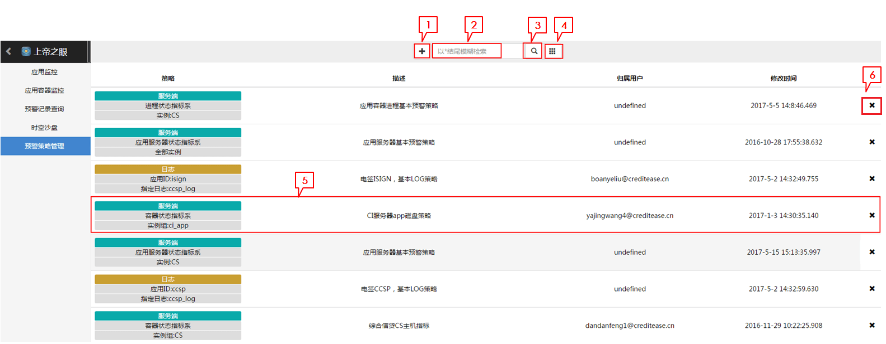
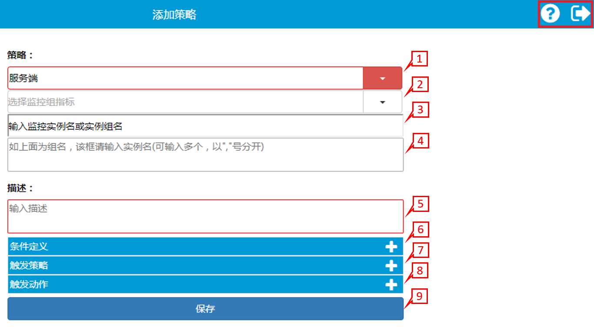
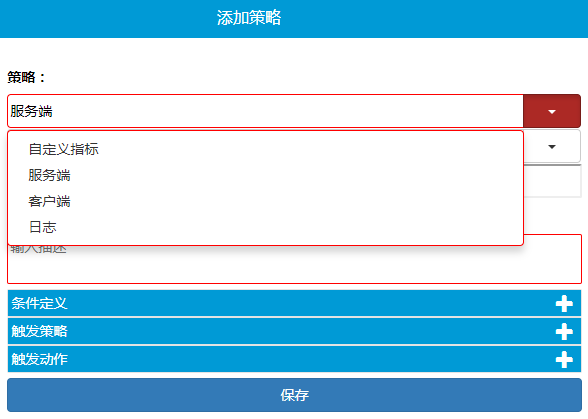
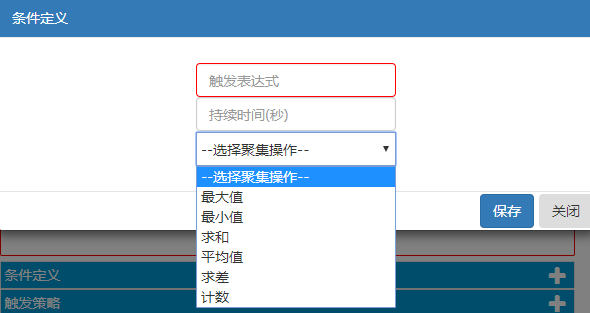
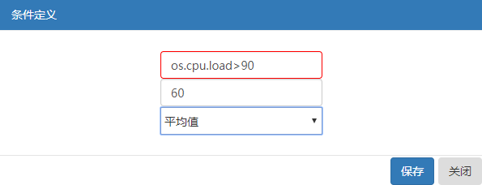
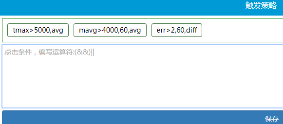
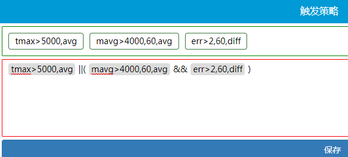
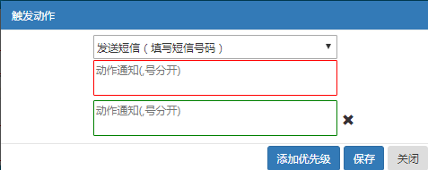
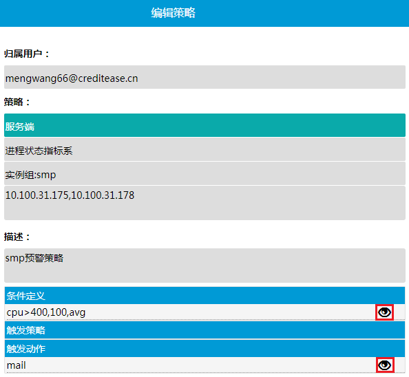
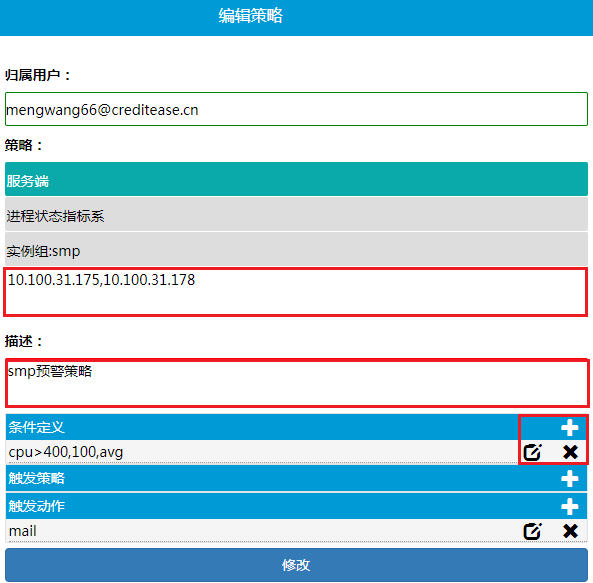

报警
uav可对所有监控指标进行报警，并提供简单的表达式对监控指标进行报警策略设置。报警表达式触发后可通过邮件、短信、HTTP接口三种方式进行报警。
预警策略设置
进入上帝之眼界面，点击左边栏预警策略管理进入预警策略列表视图。
预警策略列表视图

1.创建预警按钮
点击可创建预警，进入创建预警界面。
2.检索输入框
输入关键字进行检索，关键字以"*"结尾可以模糊匹配。
3.检索按钮
点击开始检索。
4.显示全部按钮
点击可显示全部预警策略。
5.预警策略概览栏
点击任意区域可查看预警策略详情（若策略属于用户，则进入修改界面）。
策略：显示策略简介。第一栏表示策略类型；第二栏表示监控指标类型；第三栏表示策略应用实例或应用实例组。
描述：显示策略的描述。
归属用户：显示策略的归属用户。用户对属于自己的策略有查看、修改和删除的权限，对不属于自己的策略只有查看权限。
修改时间：策略最后更新的时间。
6.删除按钮
点击删除策略，该操作无法撤销。
创建
点击预警策略列表视图中创建预警按钮进入添加策略页面。点击添加策略页面右上角打开预警设置帮助文档，点击退出到预警策略列表视图。

1.选择监控组
点击1处图标打开下拉选择框，如下图，选择监控组。

2.选择监控组指标系
选择监控组后，会增加一栏监控组指标系，点击右侧按钮打开下拉菜单框，如下图，选择监控组指标系。
3.输入实例名或实例组名
可直接输入实例名，若有多个实例，则输入实例组名，在下一栏输入实例名。实例名填写方式如下表。
| 监控指标系名 | 实例名 | 示例 |
|---|---|---|
| 自定义指标 | 服务器地址 | http://10.143.129.64:8080 或jse://10.120.68.73/com.alibaba.rocketmq.namesrv.NamesrvStartup-8902 |
| 进程状态指标系 | IP_进程名或IP | 10.100.33.136_java |
| 容器状态指标系 | 具体IP | 10.100.33.136 |
| 服务状态指标系 | 具体服务url地址或上级地址 | http://10.143.129.64:8080/isign/isign/signPDF |
| 应用状态指标系 | 应用地址 | http://10.143.129.64:8080/isign |
| 应用服务器状态指标系 | 服务器地址 | http://10.143.129.64:8080 |
| 调用状态指标系 | 服务器ip:端口#应用实例名#调用服务类型(redis,http,mongo,mysql等)://调用服务ip:端口 | 10.100.30.73:9090#smsmanager#redis://10.100.30.73:6379 |
| 日志指标 | 日志文件位置 | /app/t7-ccsp/logs/ccsp.log |
4.输入实例名
若上一栏为实例名此栏不填写，若上一栏为实例组名，此栏填写实例名，多个实例名间用","分隔。
5.输入描述
此策略的描述，用户自定义。
6.条件定义
点击添加条件定义，如下图。

- 第一栏填写触发表达式，形式为 [监控指标名][比较符][值]，比较符有< 、 > 、 =，示例：os.cpu.load>90。对于每种监控指标组名，只能使用对应的监控名。监控指标组名与指标参数名的对应关系见监控指标说明。
- 第二栏填写持续时间，表示策略判断的时间长度，单位为秒。（可不填，不填表示表达式条件发生则触发预警）。
- 第三栏选择聚集操作，表示对持续时间范围内的参数值做的聚集操作类型。
条件定义示例图如下，表示一分钟内os.cpu.load(容器cpu使用率)的平均值大于90。

7.触发策略
条件定义添加后，点击添加触发策略，如下图。

点击条件定义表达式添加进编辑框，在条件定义表达式之间添加(&&)||符号表示条件定义之间的逻辑关系，示例如下图。 
8.触发动作
点击添加触发动作，如下图。
- 第一栏选择触发动作类型，有邮件、短信、HTTP调用三种类型可选。
- 第二栏为通知对象，动作类型对应的通知对象分别为邮箱地址、手机号码、HTTP调用地址。多个通知对象间用","隔开。
点击添加优先级添加一栏通知对象，可添加多个，优先级从高至低。

9.创建完成
点击保存按钮完成创建，并跳回策略列表视图界面。
查看
用户点击不属于自己的预警策略概览进入预警查看界面。

点击触发条件或触发动作右侧图标可查看策略详细配置。
修改
用户点击属于自己的预警策略预警策略概览进入预警修改界面。

- 可修改部分有实例名、策略描述、条件定义、触发动作。
- 实例名&策略描述：直接在输入框内修改。
- 触发条件&触发动作：点击增加条件(动作)，点击修改条件(动作)，点击删除条件(动作)。
删除
点击预警列表视图中预警概览栏右侧图标删除策略。